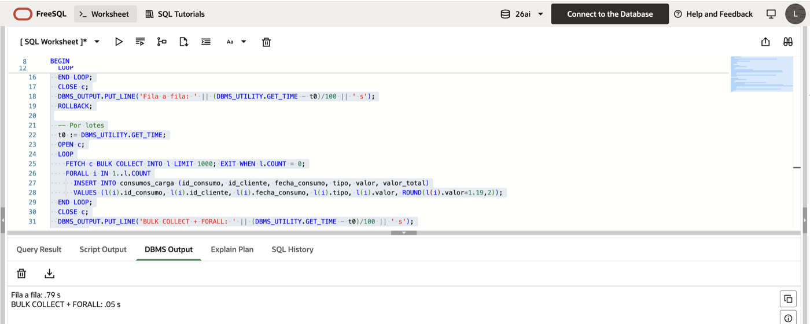

El cursor que tumbó un batch a las 3 a.m.
En soporte 7x24 uno aprende rápido que el celular sonando a las 3 de la mañana nunca trae buenas noticias. Esa vez el aviso era el de siempre: el batch nocturno no había terminado y quedaba poco tiempo antes de que arrancara la operación del día.
No voy a contar de qué sistema se trataba, pero el culpable sí, porque es de los más comunes que me he encontrado: un cursor que recorría una tabla grande fila por fila y, en cada vuelta, hacía un INSERT. Con el volumen de cuando se escribió, el proceso terminaba con tiempo de sobra. Con el volumen de esa noche, no.
Lo curioso es que el código no tenía ningún error. Compilaba y hacía exactamente lo que tenía que hacer. El problema era cómo lo hacía.
Un viaje por cada fila
Dentro de Oracle conviven dos motores: el de PL/SQL, que ejecuta tu lógica (los IF, los LOOP, las variables), y el de SQL, que es el que de verdad lee y escribe en las tablas. Cada vez que el código PL/SQL le pide algo a SQL hay un cambio de contexto: el control pasa de un motor al otro y vuelve. Un cambio de contexto cuesta poco. Doscientos mil ya no tanto.

Así se ve el patrón sobre el esquema ficticio que uso en el blog, copiando los consumos a una tabla CONSUMOS_CARGA con un impuesto calculado:
DECLARE
CURSOR c_consumos IS
SELECT id_consumo, id_cliente, fecha_consumo, tipo, valor
FROM consumos;
r c_consumos%ROWTYPE;
BEGIN
OPEN c_consumos;
LOOP
FETCH c_consumos INTO r; -- viaje 1: trae una fila
EXIT WHEN c_consumos%NOTFOUND;
INSERT INTO consumos_carga -- viaje 2: inserta una fila
(id_consumo, id_cliente, fecha_consumo, tipo, valor, valor_total)
VALUES
(r.id_consumo, r.id_cliente, r.fecha_consumo, r.tipo, r.valor,
ROUND(r.valor * 1.19, 2));
END LOOP;
CLOSE c_consumos;
COMMIT;
END;
/Cada FETCH es un viaje y cada INSERT es otro. Si además alguien dejó un COMMIT dentro del loop, súmele el costo de confirmar fila por fila.
Mover lotes, no filas
BULK COLLECT trae muchas filas en un solo viaje y las guarda en una colección. FORALL hace lo contrario: manda la colección completa al motor SQL de una vez. La lógica es la misma y el código cambia poco:
DECLARE
CURSOR c_consumos IS
SELECT id_consumo, id_cliente, fecha_consumo, tipo, valor
FROM consumos;
TYPE t_consumos IS TABLE OF c_consumos%ROWTYPE;
l_lote t_consumos;
BEGIN
OPEN c_consumos;
LOOP
FETCH c_consumos BULK COLLECT INTO l_lote LIMIT 1000;
EXIT WHEN l_lote.COUNT = 0;
FORALL i IN 1 .. l_lote.COUNT
INSERT INTO consumos_carga
(id_consumo, id_cliente, fecha_consumo, tipo, valor, valor_total)
VALUES
(l_lote(i).id_consumo, l_lote(i).id_cliente, l_lote(i).fecha_consumo,
l_lote(i).tipo, l_lote(i).valor, ROUND(l_lote(i).valor * 1.19, 2));
END LOOP;
CLOSE c_consumos;
COMMIT;
END;
/Hay dos detalles en ese código que no son decoración.
El primero es el LIMIT. Sin él, BULK COLLECT intenta meter toda la tabla en memoria de una vez. Con doscientas mil filas puede que aguante; con unos cuantos millones, el que se cae ahora es el servidor. Lotes de entre 100 y 1.000 filas son un buen punto de partida.
El segundo es la salida del loop: EXIT WHEN l_lote.COUNT = 0 y no %NOTFOUND justo después del FETCH. Con LIMIT, %NOTFOUND se vuelve verdadero cuando el último lote llega incompleto, así que si preguntas por él en ese punto te sales sin procesar las últimas filas. No sale ningún error. Simplemente faltan datos, que es la peor clase de bug.
Esa trampa es tan común que Steven Feuerstein le dedica una lámina completa en este video sobre BULK COLLECT:
No me crean a mí
En la carpeta sql/ del blog dejé los scripts para probarlo. setup_demo.sql crea el esquema con 50.000 consumos inventados y demo_cursor.sql hace la misma carga de las dos maneras con SET TIMING ON. Yo lo corrí en Oracle FreeSQL, con una versión reducida del esquema de 50.000 consumos: fila a fila me tardó 0,79 segundos y por lotes, 0,05. Unas dieciséis veces más rápido, y eso con una tabla de juguete. Multiplica por los millones de filas de un batch de facturación real y entiendes por qué esa noche no alcanzó la ventana.

¿Entonces nunca más un cursor?
Tampoco. Si el volumen es pequeño, o si cada fila necesita una lógica enredada con llamadas a otros procedimientos, el cursor normal se lee y se mantiene mejor, y eso también cuenta. Y hay una opción que le gana a las dos: si la carga se puede escribir como un solo INSERT ... SELECT, no hace falta PL/SQL para nada.
INSERT INTO consumos_carga
(id_consumo, id_cliente, fecha_consumo, tipo, valor, valor_total)
SELECT id_consumo, id_cliente, fecha_consumo, tipo, valor,
ROUND(valor * 1.19, 2)
FROM consumos;Ni un solo cambio de contexto. Si necesitas que el FORALL no se detenga con la primera fila que falla, existe SAVE EXCEPTIONS, pero eso ya entra en el terreno de los errores, que es tema de la entrada 3.
Lo que me quedó
Desde entonces, cuando reviso un proceso PL/SQL, lo primero que busco es un LOOP con un INSERT, UPDATE o DELETE adentro. Y me hago tres preguntas en orden: ¿esto se puede hacer en un solo SQL? Si no, ¿se puede hacer por lotes? Solo si las dos respuestas son no, lo dejo fila a fila.